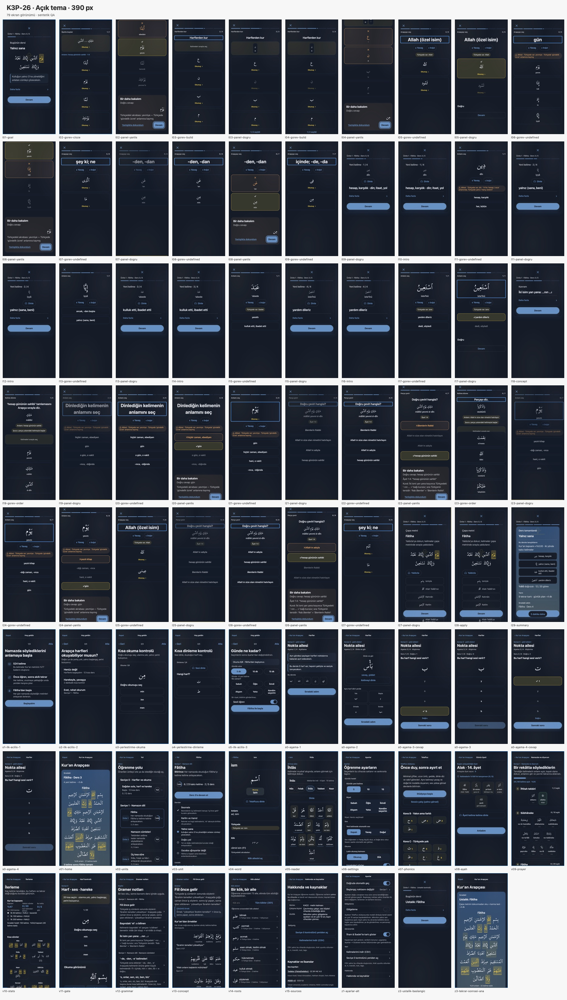
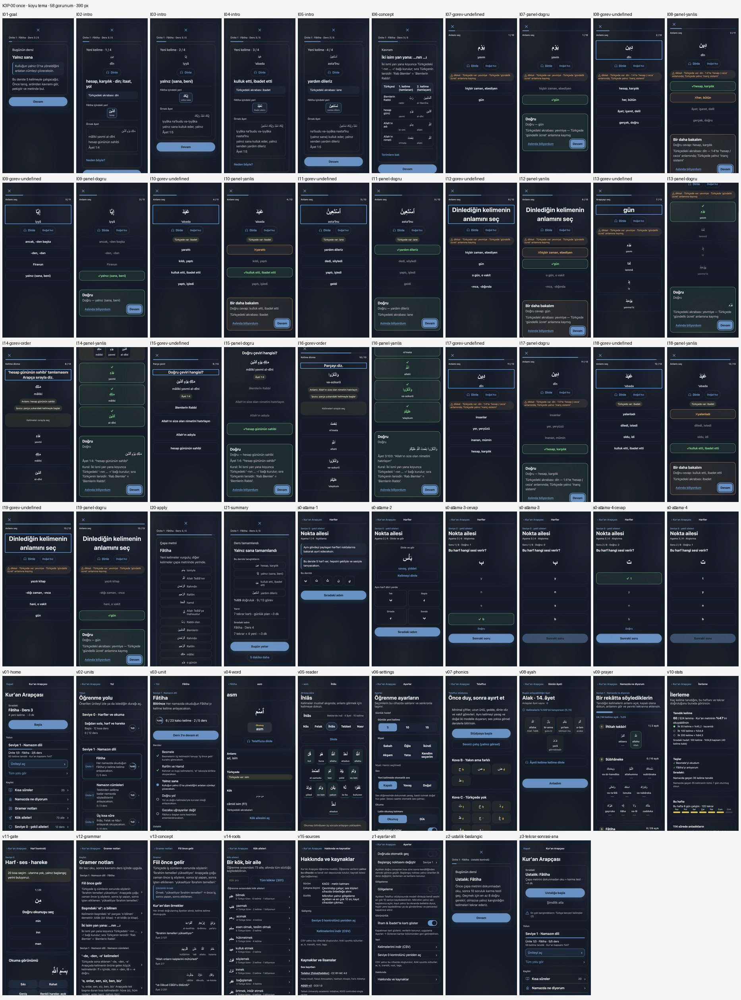
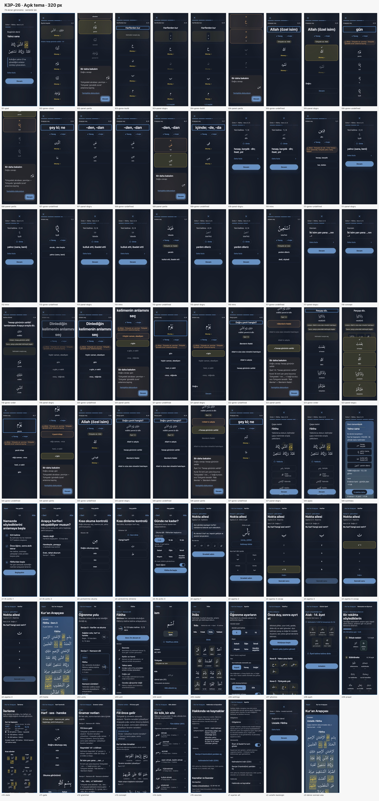
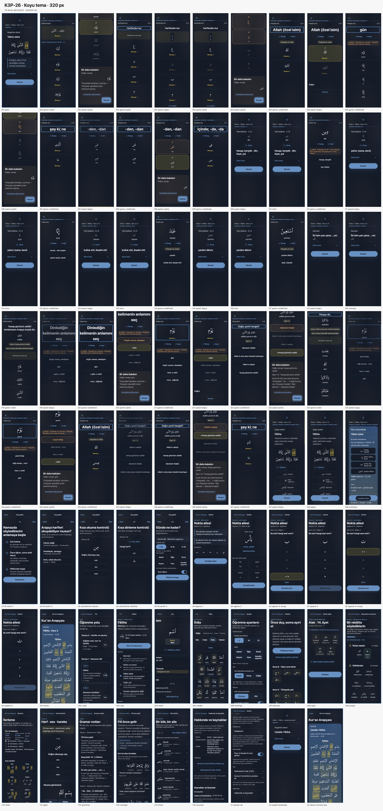
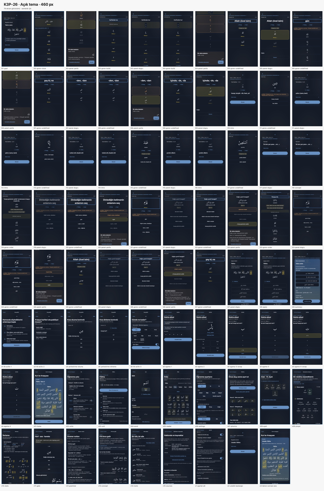
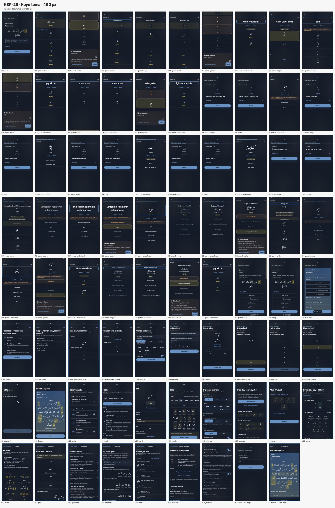

K3P-00 başlangıç kontakları 390 px genişlikte 58 görünüm içeriyor. K3P-26 aynı 390 px genişliğinde 79 görünüm aldı. 320 px ve 460 px sayfaları K3P-26 ek QA ölçüleridir; K3P-00 için aynı genişliklerde karşılık gelen kontak bulunmuyor.





